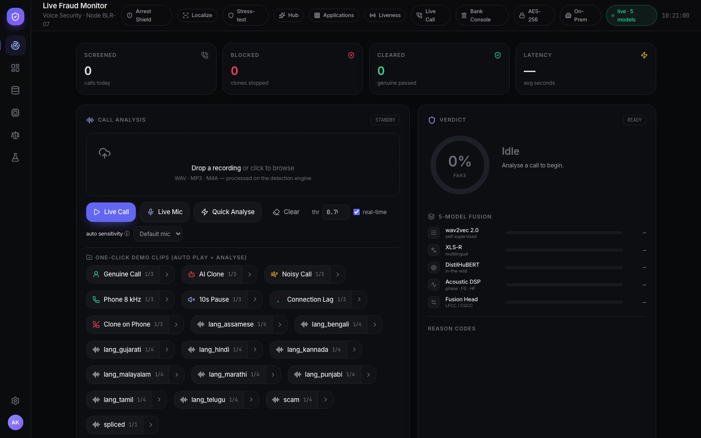
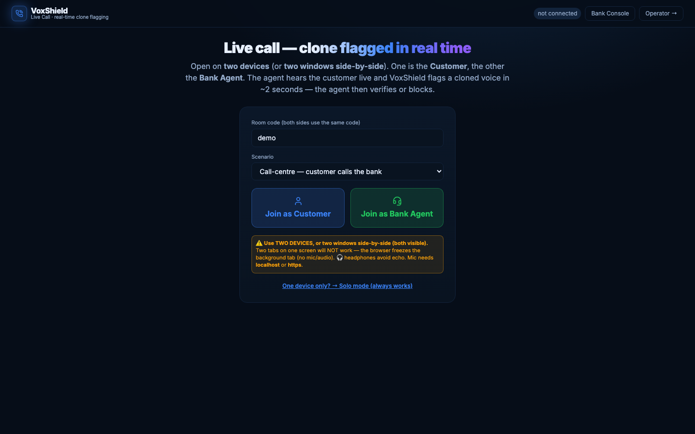
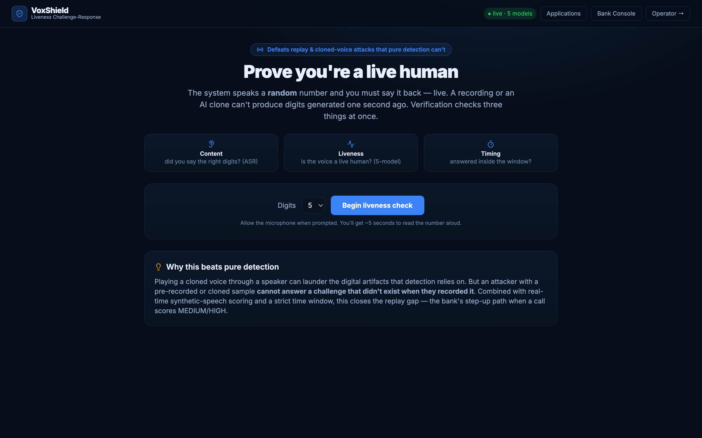
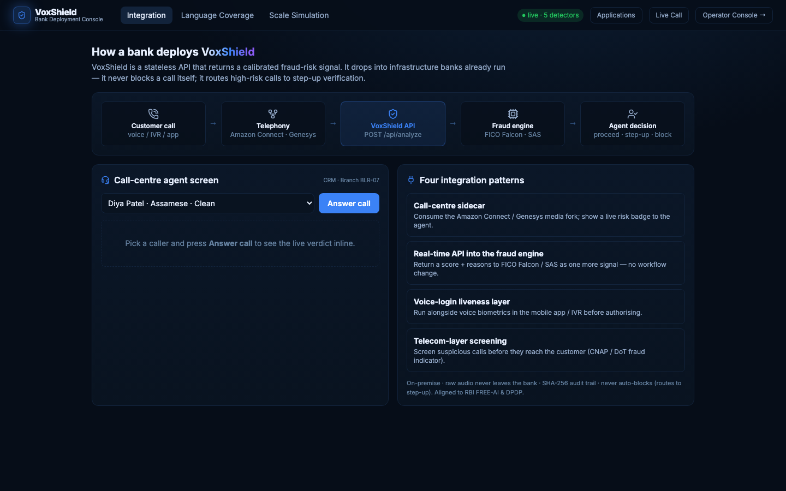
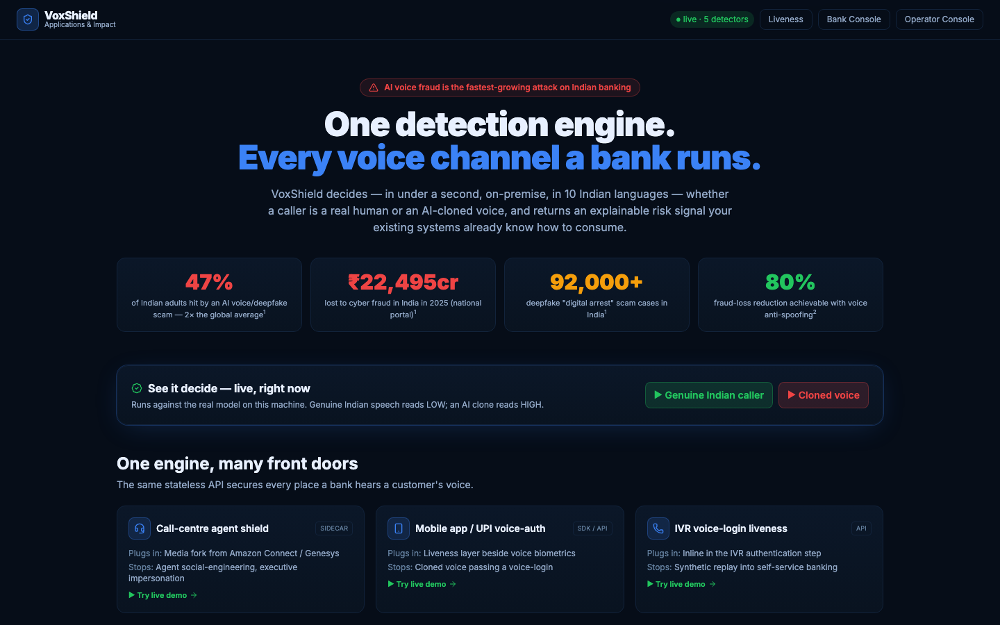

VoxShield
Real-time AI voice-clone detection for Indian banking, five detectors, one learned meta-brain, language fairness, and challenge-response liveness. Flags a fraud call within the first 10 seconds.
Your voice is no longer yours alone.
Consumer voice-cloning tools can now copy a speaker from a short clip of audio, a voicemail greeting, a social post, a customer-care recording. The fake sounds human. The bank's phone channel can't tell the difference.
Watch the signal. Human speech carries micro-variation, jitter, shimmer, breath. A clone's waveform is eerily regular. That regularity is the fingerprint VoxShield reads.
A cloned voice calls the branch. It knows the customer's name. It passes the “sounds right” test. Voice is becoming the easiest door into a bank account.
Seconds of audio to clone
Modern text-to-speech and voice-conversion systems produce convincing clones from very short samples, and they're cheap, public, and multilingual. Industry data
Telephony hides the evidence
Bank calls travel over 8 kHz lines with G.711 compression. The codec smears exactly the high-frequency artifacts most detectors depend on, a detector that only saw studio audio goes blind on a real call.
The damage happens fast
Voice-authorised transfers and social-engineered agents act in minutes. A defence that renders a verdict after the call ends is forensics, not protection. Detection has to happen inside the first seconds.
One model. One language. One point of failure.
We measured the standard approaches before building our own. Every off-the-shelf answer breaks in the same three places.
Single detectors are brittle
On held-out real-world data, individual detectors we tested ranged from 16.0% to 62.4% equal-error-rate. A generator the model never saw walks straight through. Measured on held-out In-the-Wild data
Black boxes can't face a customer
“The AI said fraud” is not a defensible reason to freeze an account. Banks need reason codes an operator, an auditor, and a regulator can each read, or the tool never leaves the pilot.
English-centric models punish India
Detectors trained on English speech misread Indian languages and accents as “synthetic”. Genuine Tamil or Bengali customers get flagged as fraudsters. A detector that is unfair is a detector a bank cannot deploy.
And even a perfect detector loses to a replay attack, play the clone through a speaker, and the acoustic path launders the digital artifacts away. Detection alone is not a defence. It needs layers.
One layered, honest defence.
VoxShield is not a model. It's a defence-in-depth system: an ensemble that detects, a fairness layer that protects genuine customers, and a liveness challenge that defeats what detection can't see, wrapped in explainability a bank can audit.
01, Detection
Five decorrelated detector families, signal-processing artifacts, hand-crafted anti-spoofing features, and three neural models, fused by a learned meta-stacker with calibrated, probability-true scores.
02, Fairness
Evaluated on genuine speech in 10 Indian languages, retrained Indic-aware, and stress-tested under 8 kHz telephony, so a real customer speaking Telugu is not treated as a threat.
03, Liveness
A random challenge, “say 4 · 7 · 2”, that a recording cannot answer. Content, liveness and timing verified together. This is the layer that beats replay.
04, Honesty, engineered
Every verdict ships with plain-language reason codes. Every clip is SHA-256-hashed into an audit trail. And a High-Risk flag never auto-blocks, it routes to step-up verification in the bank's existing flow.
Weak alone. Strong together.
Each detector fails differently, that's the point. A logistic meta-learner, trained on a disjoint split, learns exactly how much to trust each one. It even learns to down-weight two of its own models. That honesty is the architecture.
Every number in this diagram is a real trained parameter or held-out measurement from the published model artifacts: per-detector EER / AUC on the 800-clip In-the-Wild test, the meta-learner's learned stacker weights and bias, the fitted Platt coefficients, and the deployed 0.70 threshold.
Equal-error-rate, lower is better. Frozen detectors measured on the full 800-clip In-the-Wild corpus; the meta-learner on its disjoint 320-clip held-out split it never saw. The learned stacker weights: DistilHuBERT +2.22, LFCC/CQCC head +2.10, XLS-R +1.21, and negative weights (−0.55, −1.17) on the two detectors it learned not to trust on this data.
Every verdict explains itself, five reason codes an operator can read aloud:
Watch one detection happen, second by second
A cloned voice dials in. Every second, a new 3-second window is scored by all five detectors and fused. Watch the evidence build until the flag fires.
→ audit ledger: sha256 9f2c… · operator notified
Illustrative replay with a scripted trace, but the end state is the system's real, verified output: fake clip → HIGH at fused score 0.73, flagged at 3.0 s (inside the 10-second target), reason codes PH · HF · PR, hash-keyed audit entry.
A detector that flags honest customers is a failed detector.
We ran the full ensemble over genuine IndicVoices speech in ten Indian languages and counted how often real customers were wrongly flagged. Then we retrained Indic-aware, and measured again.
False-positive rate on genuine Indian-language speech, before → after Indic-aware retraining.
Internal benchmarking · IndicVoices genuine speech · 30 clips per language · threshold 0.70
Per-language false-positive rate on clean genuine speech, threshold 0.70, measured, not projected. We publish the uncomfortable numbers too: Telugu is still our weakest language, and under 8 kHz telephony the rates rise further, which is exactly why the pipeline trains with G.711 codec augmentation, why verdicts are channel-aware (a detected phone line must clear a stricter 0.85 bar before a HIGH, protecting genuine callers while real clones at ~0.96 still flag), and why liveness, not detection alone, gates any customer action.
Fairness cuts both ways, we also catch Indian-language fakes
The English-trained detectors were blind to synthetic Indian speech too. We synthesized an Indian-language deepfake set (MMS-TTS, 8 languages), trained an Indic-aware fusion path, and route to it with on-device language-ID, English stays on the main model.
Language-routed fusion: an on-device language-ID (Whisper) sends Indian-language audio to a stacker trained with a synthesized Indic deepfake class, while English keeps the main model, so both error rates fall at once. The fakes here are TTS-synthesized (a genuine synthetic-speech class); adversarial voice-conversion clones are the next hardening step.
A recording can't answer a question from one second ago.
Replay attacks launder digital artifacts through a speaker and past any pure detector. VoxShield's challenge-response closes that door: the system speaks a random prompt, and the caller must say it, live.
Digits are generated at random the moment the challenge is issued. A pre-recorded clip, even a perfect clone, cannot contain numbers that didn't exist when it was made.
Check 1Content
Whisper ASR transcribes the reply. Do the spoken digits match the challenge, including number-word variants (“four seven two”)?
Check 2Liveness
The full VoxShield ensemble scores the reply itself. Is this a live human voice, not a synthesis engine generating the digits on the fly?
Check 3Timing
Did the answer arrive inside the challenge window? A pass requires all three, defence-in-depth in a single interaction.
AttackerReplay defeated
Played-back recordings fail content. Real-time TTS fails liveness. Slow human-in-the-loop relays fail timing. Each escape route is closed by a different check.
Catch the fraud, not just the fake.
Real/fake is table stakes. The layer that wins a bank is the intelligence on top, is this voice running a scam script? is it really the account holder? has this same clone hit other victims? Every capability below is live in the system today.
Digital Arrest Shield
Fuses the voice-clone score with a scam-intent read of the transcript, and tracks the scam's live script stage, Authority → Threat → Isolation → Extraction. A cloned voice running the full playbook → CRITICAL. Covers English, Hindi & Hinglish, the languages the ₹19,000 cr scam is actually run in.
Citizen-protection warning
On a digital-arrest verdict, VoxShield doesn't just flag it, it speaks a warning in the victim's own language (Hindi, Tamil, Telugu, Bengali, Marathi…) echoing the Government's own message: “no real agency arrests over a call, hang up and call 1930.” It can stop the payment, not just log the fraud.
Voice enrolment & verification
A real ECAPA speaker embedding answers two questions at once: is this the enrolled customer? and is the voice live-human? A clone of the customer passes identity but fails liveness, the decisive REJECTED-CLONE case no biometric-alone system catches.
Fraud-ring linkage
Scam call-centres reuse one cloned voice across dozens of victims. VoxShield keeps a rolling speaker-print of flagged calls and links the same voice, even across the 8 kHz phone codec, turning isolated verdicts into an operation-level signal.
Explainable, live
Every verdict streams its reasoning in real time, each detector's score, the strongest evidence, the fusion logic, and a rising confidence, plus generator attribution and partial-fake localization (which seconds are AI). Auditable, not a black box.
Identity × liveness, the decision no single check makes
Voice biometrics alone say "it's the customer's voice", and a clone passes. Detection alone says "it's synthetic", but not whose. VoxShield fuses both; all three outcomes verified end-to-end.
| Voice presented | Matches enrolled identity? | Reads live-human? | VoxShield decision |
|---|---|---|---|
| The genuine customer | ✓ yes | ✓ yes | VERIFIED |
| A clone of the customer | ✓ yes | ✕ synthetic | REJECTED, CLONE |
| A different person / attacker | ✕ no | , | REJECTED, IDENTITY |
Endpoints live today: /api/analyze-call (voice×intent), /api/enroll & /api/verify-speaker (ECAPA identity×liveness), /api/localize (partial-fake). Speaker matching survives the 8 kHz codec because it runs on a speaker-identity embedding, not the detection features.
Not a deck. A working system.
Everything below is a live screenshot of VoxShield running, FastAPI backend, five-model ensemble, streaming analysis, liveness, and a two-party live call demo. TRL-5: validated in a relevant environment.

Drop a call. Read the verdict.
Upload or record audio and get the calibrated risk verdict, the per-detector fusion breakdown, the spectrogram, and plain-language reason codes, in one screen built for a fraud desk, not a data scientist.
- Whole-clip fusion or live streaming mode
- Decision timeline with time-to-flag
- WCAG 2.1 AA, risk shown by icon + text, never colour alone
Scored while you're still talking.
A live two-party call, analysed every two seconds on a sliding window. Evidence accumulates and the High-Risk flag fires the moment the running score crosses threshold, verified at 3.0 s on a synthetic clip.
- 3-second windows, 1-second stride
- Raw-mic pipeline, no browser audio “enhancement” to distort the signal
- Works on any phone over HTTPS


Say the numbers. Prove you're real.
The challenge-response flow as the caller sees it: random digits, a recording window, and a three-check verdict, content, liveness, timing, rendered with the evidence behind each check.
- Whisper ASR content verification
- Auto-verify on reply, no operator action needed
- Anti-replay by construction
Where the signal meets the workflow.
How a bank consumes VoxShield: risk feeds the existing fraud flow alongside caller-ID and CNAP signals. High risk routes to step-up verification. Nothing is ever auto-blocked.
- Step-up routing, not account freezing
- Hash-keyed audit trail of every decision
- Operator actions logged via /api/action


One engine, many surfaces.
The same API guards every place a voice touches the bank: phone banking and IVR, voice-authorised payments, agent-assist on live calls, KYC re-verification, and audio forensics after the fact.
- Same drop-in REST API everywhere
- Streaming and whole-clip modes
- OpenAPI documented at /docs
Numbers we can defend.
Every figure below comes from held-out evaluation, test clips the system never trained on. No cherry-picking, no “up to”, no projections dressed as measurements.
Test protocol: the neural models are frozen; the meta-stacker trained on 480 clips and was evaluated on a disjoint 320-clip held-out split it never saw, so these are honest cross-dataset numbers, the protocol that survives due diligence.
The scoreboard, every detector, same held-out test
Seven systems on held-out In-the-Wild data, frozen detectors on the full 800-clip corpus, the learned meta-fusion on its disjoint 320-clip test split. This is the comparison that justifies the architecture.
| System | EER ↓ | AUC ↑ | Accuracy ↑ | Standing |
|---|---|---|---|---|
| Wav2Vec2 detector, alone | 62.4% | 0.356 | 38.6% | weak alone |
| Acoustic DSP, alone | 46.9% | 0.521 | 50.0% | weak alone |
| LFCC + CQCC head, alone | 26.8% | 0.786 | 70.9% | partial |
| DistilHuBERT, alone | 24.9% | 0.828 | 73.8% | good |
| XLS-R 300M, alone | 16.0% | 0.901 | 84.0% | best single |
| Simple-average fusion, unweighted | 19.0% | 0.839 | 50.1% | naive blend |
| VoxShield meta-fusion, all five, stacked | 5.9% | 0.983 | 93.4% | deployed |
Frozen detectors measured on the full 800-clip In-the-Wild corpus; the learned meta-fusion on its disjoint 320-clip held-out split, threshold 0.70. Meta-fusion detail: F1 0.93 · 10 false positives · 11 false negatives. Note the honesty: naive averaging (19.0%) is worse than the best single model (16.0%), only the learned stacker beats both. And two of our own five detectors are near-chance alone; the stacker's negative weights on them are visible in the published artifacts.
What the fusion buys that a single-model API can't
| Capability | Typical single-model API | VoxShield |
|---|---|---|
| Decorrelated multi-model detection | ✕ one model, one blind spot | ✓ five families + learned stacker |
| Calibrated probabilities | ✕ raw scores | ✓ Platt-calibrated |
| Explainable verdicts | ✕ black box | ✓ SSL · PH · HF · PR · BR reason codes |
| Indian-language fairness, measured | ✕ English-centric | ✓ 10 languages, FP rates published |
| Replay-attack defence | ✕ detection only | ✓ challenge-response liveness |
| Verdict inside the live call | , clip upload after the fact | ✓ streaming, flagged at 3.0 s |
| On-prem / air-gapped | ✕ cloud only | ✓ models baked into Docker |
| Customer-safety guarantee | , score, then your problem | ✓ never auto-block, step-up routing |
Capability comparison against the common commercial pattern, a single neural detector behind a cloud endpoint. It is an architecture comparison, not a benchmark of any specific vendor.
We red-teamed ourselves, robustness under channel & evasion
The uncomfortable table a bank CISO asks for: we re-scored the held-out test set through real phone/VoIP codecs and benign audio manipulations, and report how far each moves the detector. Degradations included, not hidden.
| Condition | EER ↓ | Δ EER vs clean | Accuracy ↑ | Standing |
|---|---|---|---|---|
| Clean, baseline | 7.5% | , | 92.5% | reference |
| Opus 12k, VoIP codec | 2.5% | −5.0 pts | 95.0% | robust |
| G.711 8k, Indian telephony | 15.0% | +7.5 pts | 77.5% | robust |
| MP3 16k, lossy codec | 20.0% | +12.5 pts | 82.5% | holds |
| Tempo 0.9×, benign stretch | 32.5% | +25.0 pts | 70.0% | degrades |
| Noise @15 dB SNR | 45.0% | +37.5 pts | 62.5% | degrades |
| Pitch +2 st, benign shift | 56.3% | +48.8 pts | 58.8% | degrades |
80 held-out clips per condition, threshold 0.70. The honest split: VoxShield is robust to the real phone/VoIP codecs it was hardened against, Opus even improves on clean, and 8 kHz G.711 (the Indian-telephony case) moves only +7.5 pts. The open surface is benign DSP manipulation, pitch, tempo and noise each cost +25 to +49 pts EER, which is exactly why customer action is gated on liveness, not detection alone. White-box gradient attacks (FGSM/PGD) are a stated roadmap item, not claimed here.
Built for a bank's basement, not our cloud.
A stateless API a bank can run on-premise or air-gapped. Audio is hashed, never stored in clear. And by design, VoxShield advises the fraud flow, it never acts alone.
☎ Bank telephony
IVR, phone banking, agent calls, 8 kHz G.711 lines. VoxShield trains with codec augmentation so this is home turf, not hostile territory.
🛡 VoxShield engine
FastAPI + five-detector ensemble + meta-fusion, models baked into a Docker image, the container never phones home. Stateless, so it scales horizontally. Sub-second on GPU.
⇢ Step-up verification
High risk routes the caller to additional verification inside the bank's existing fraud workflow, alongside CNAP and caller-ID signals. A human stays in charge.
SHA-256 audit trail
Every clip is hashed for the audit log, raw audio is never stored in clear. AES-256 at rest available for persistence.
Never auto-block
Anti-spoofing is a layered fraud signal, not a judge. No customer is ever locked out by a model score.
Explainable by default
Reason codes on every verdict, plus /api/why-fusion for a plain-language account of any decision.
Accessible & compliant UI
Built to GOV.UK / USWDS patterns, WCAG 2.1 AA, risk communicated by icon and text, never colour alone.
Inside the box, full system architecture
Every component below exists in the repository today. Audio flows top to bottom; every hop is a boundary a bank's security team can inspect.
Scalability, grows like a web service, because it is one
A concurrent-call load-test harness ships with the repo (multipart POST flood with latency percentiles) so capacity on the bank's own hardware is measured, not promised.
India-ready, built to the DPDP Act, by design
VoxShield's architecture maps onto India's Digital Personal Data Protection Act, 2023 and RBI fraud-risk expectations, not as a certificate, but as engineering choices already in the repository. Six principles, six design facts you can inspect.
Data minimisation & retention limits
A call's audio is processed to return one risk score, then discarded. Raw audio is never persisted in clear, only a SHA-256 hash enters the audit ledger. DPDP §8, accuracy & storage limitation.
Purpose limitation
Audio is used solely for fraud-risk scoring inside the bank's existing anti-fraud workflow, no secondary use, no profiling, and no training on customer calls.
Data localisation
On-prem / air-gapped deployment means personal data never leaves the bank's own infrastructure, no cross-border transfer, no third-party processor. The container makes zero external calls at runtime.
No solely-automated decision
VoxShield advises; it never auto-blocks. A human fraud officer makes every customer-affecting call, no adverse action rests on a model score alone.
Transparency & explainability
Every verdict carries reason codes and a plain-language /api/why-fusion account, supporting a Data Principal's right to understand a decision that affects them.
Accountability & auditability
A tamper-evident SHA-256 ledger plus a per-decision action log give the Data Fiduciary a defensible trail for grievance redressal and regulatory review.
Alignment by design, not a legal certification: final DPDP compliance depends on the deploying bank's own notice, consent and Data Fiduciary obligations. VoxShield is engineered to make meeting them straightforward, data it never keeps is data neither it nor the bank must protect.
India's banking future is voice-first.
Phone banking, IVR, and voice-led payments reach customers that apps never will, across languages, literacy levels, and feature phones. Every one of those calls needs to be trusted.
The channel banks can't abandon
Voice is the default banking interface for millions of customers, and the channel voice-cloning attacks target first. Defending it isn't a feature; it's table stakes for every bank running a call centre.
Fairness is the moat
Any vendor can wrap an English deepfake model in an API. Evaluated fairness across ten Indian languages, measured under real telephony, is what a public-sector bank can actually procure, and what we uniquely bring.
Beyond banking
The same engine serves government helplines, telecom anti-vishing, KYC re-verification, courtroom audio forensics, and media verification, every domain where a voice must be provably human.
| Deployment path | Latency | Availability | Cost | Fit |
|---|---|---|---|---|
| On-prem GPU (bank data centre) | sub-second | 24 / 7 | bank hardware | production, air-gapped |
| Cloud container (CPU) | 3-8 s / analysis | 24 / 7 | ~ $7-25 / month | pilots & testing |
| Free container tier (16 GB CPU) | 3-8 s / analysis | 24 / 7 | free | evaluation & demos |
Internal benchmarking. The Docker image bakes all five detectors plus Whisper (~2 GB of models) in at build time, a running container never re-downloads anything, which is what makes the air-gapped deployment real rather than aspirational.
One AI platform. Every voice. Every industry.
The banking fraud desk is the beachhead. The same drop-in engine, detection, liveness, risk, secures every sector where a voice must be provably human. Here is the deployment ecosystem, the architecture, and the business model behind it.
Enterprise deployment ecosystem
Twelve sectors, one API
Banking & Finance
- Call centres
- mobile & net banking
- UPI verification
- loan approval
- KYC
Telecom
- Customer care
- SIM verification
- voice auth
- fraud-call screening
Government
- Citizen helplines
- police
- emergency calls
- Aadhaar verification
Healthcare
- Telemedicine
- medical helplines
- insurance & doctor authentication
Insurance
- Claims intake
- customer & agent verification
- call investigation
BPO / Contact
- Contact centres
- quality monitoring
- AI-agent verification
Media
- News verification
- fake-audio detection
- journalist authentication
Legal
- Court evidence
- audio verification
- digital forensics
- investigation
Enterprise
- Internal meetings
- HR interviews
- executive & secure comms
Education
- Online exams
- viva authentication
- remote interviews
- voice identity
Cybersecurity
- SOC signal
- incident response
- threat hunting
- digital evidence
Defense
- Secure comms
- intelligence
- tactical & command authentication
Banking is live today (TRL-5). The other sectors are the same engine applied to adjacent voice-fraud problems, the addressable expansion, not current deployments.
Deployment architecture
Client
User · web · mobile · IVR · SIP trunk
API Gateway
auth · routing · rate-limit
Load Balancer
horizontal fan-out · health checks
VoxShield AI Cluster
stateless replicas
Message Queue
async jobs · backpressure
GPU Cluster
batched neural inference · sub-second
Database + Analytics
hash-keyed audit ledger · metrics
Dashboard + Enterprise API
operator console · webhooks · SDK
Deployment modes
Cloud SaaS
Multi-tenant, elastic, zero-ops. Fastest path to pilot, spin up and integrate in days.
Private Cloud
Single-tenant VPC in the customer's cloud account. Data residency + isolation.
On-Premise
Air-gapped in the bank's data centre. Docker image bakes every model, no runtime downloads.
Edge Deployment
Quantised models at the branch / gateway for lowest-latency, offline-capable screening.
Enterprise workflow
Incoming Voice
Noise Removal
Speaker Verification
Liveness Check
Deepfake Detection
Risk Score
Decision Engine
Every hop is a boundary a security team can inspect. The decision engine never auto-blocks, HIGH routes to step-up verification, a human stays in charge.
Business model
Enterprise SaaS
Per-seat / per-line subscriptions for banks, BPOs and enterprises.
API Usage Pricing
Metered per voice-analysis call, scales with the customer's call volume.
On-Prem Licensing
Annual license for air-gapped, self-hosted deployments (banking / defense).
Government Contracts
Citizen-helpline & Digital-India anti-fraud programs; multi-year tenders.
Banking Contracts
Fraud-desk integration alongside CNAP / caller-ID; the beachhead market.
Healthcare & Insurance
Telehealth doctor auth and claims-call investigation packages.
OEM Partnerships
Embed the engine inside contact-centre / telecom platforms.
White-Label
Rebrandable detection for MSSPs and cloud-comms vendors.
Marketplace
Cloud-marketplace listings (AWS / Azure) for frictionless procurement.
Customer journey
Prospect
discovery + threat assessment
Pilot
sandbox on recorded traffic
Integration
drop-in API / SIP hook
Training
tune thresholds to their FP budget
Production
live fraud-desk signal
Monitoring
24×7 dashboards + audit
Expansion
new lines, new sectors
Integrations & channels
Security architecture
Scales like a web service, because it is one
Enterprise SLAs & readiness
SLAs and certifications are targets for the managed service as it hardens from the TRL-5 core, stated as goals, not current certifications. Accessibility (WCAG 2.1 AA) and the hash-keyed audit trail are implemented today.
The generators will improve. So will the shield.
VoxShield is TRL-5 today, a validated working system. Here is the honest path from prototype to national infrastructure.
Working system
- Five-detector meta-fusion, 5.9% held-out EER
- Fairness measured across 10 Indian languages
- Challenge-response liveness with Whisper ASR
- Live two-party call demo, flag at 3.0 s
- On-prem Docker image, SHA-256 audit trail
Bank sandbox pilot
- ONNX-quantised AASIST-L, sub-10 s streaming on commodity CPUs
- Pilot on recorded IVR traffic in a bank sandbox
- Concurrency load-testing on bank hardware with the bundled harness
- Threshold tuning against the bank's own false-positive budget
Harden for India
- Indic fine-tuning of the neural detectors, prototyped: XLS-R-300M fine-tuned on synthesized Indic deepfakes caught 100% of held-out Indic synthetic speech (a GPU-box production step)
- Continual-learning ingest of each new voice-generator family
- Wider IndicVoices coverage and telephony-condition fairness re-runs
- Live-traffic shadow deployment beside the existing fraud stack
Certify & attribute
- Source attribution, which generator family made this clone
- Adversarial-robust training (Malafide / Malacopula-class attacks)
- Regulator-ready audit pack: model cards, fairness reports, decision logs
- Qualification in a production-representative environment
National scale
- Multi-bank production rollout, on-prem per institution
- Coverage growing toward all 22 scheduled languages
- Shared fraud-signal exchange alongside CNAP / caller-ID
- The shield keeps learning as the generators keep improving
TRL-5 is measured, a validated working system. Phases 1-4 are engineering plans with target windows, labelled as such; nothing beyond TRL-5 is claimed as done.
Detection. Fairness. Liveness. One layered, honest defence for India's voice-first banking future.